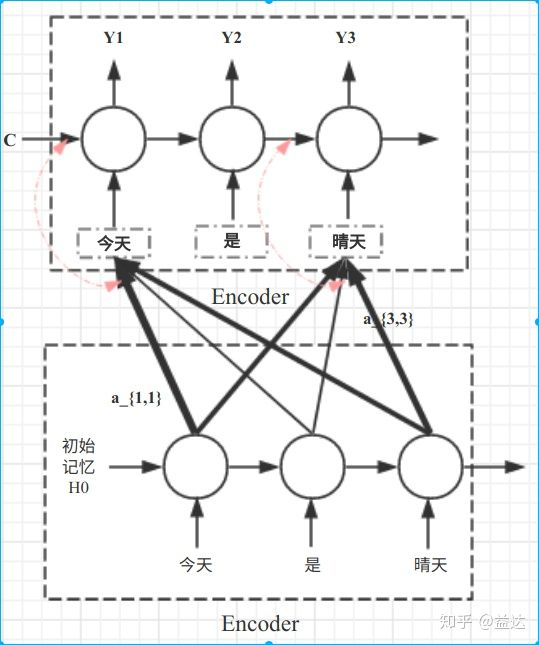
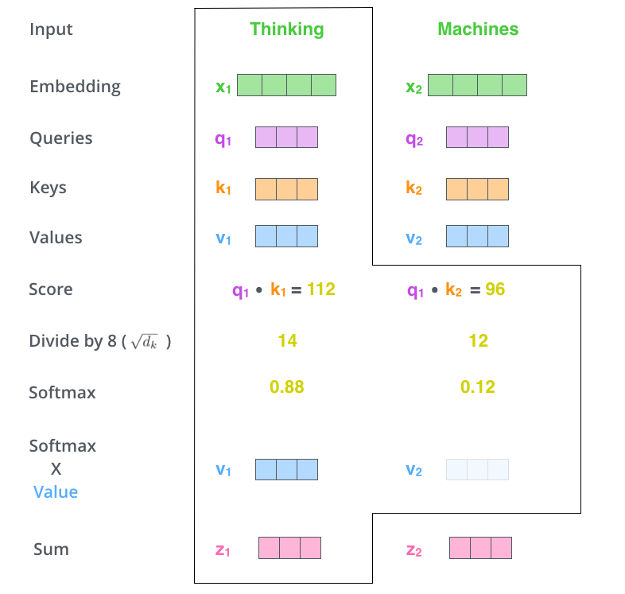
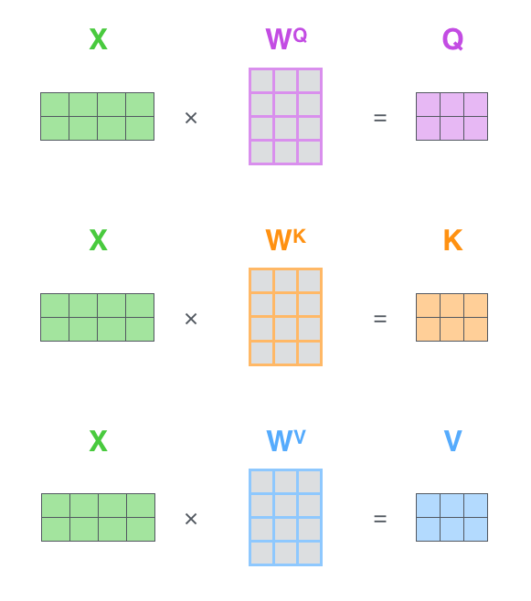

attention-wiki
Attention 从分类到实现细节
Attention的本质可以看做加权求和。
Attention 的 N 种类型

Attention 有很多种不同的类型：Soft Attention、Hard Attention、静态 Attention、动态 Attention、Self Attention 等等。上图为各种Attention的分类，下面是这些不同的 Attention 的解释。
由于这篇文章《Attention 用于 NLP 的一些小结》已经总结的很好的，下面就直接引用了：
本节从计算区域、所用信息、结构层次和模型等方面对 Attention 的形式进行归类。
1. 计算区域
根据 Attention 的计算区域，可以分成以下几种：
1）Soft Attention，这是比较常见的 Attention 方式，对所有 key 求权重概率，每个 key 都有一个对应的权重，是一种全局的计算方式（也可以叫 Global Attention）。这种方式比较理性，参考了所有 key 的内容，再进行加权。但是计算量可能会比较大一些。
2）Hard Attention，这种方式是直接精准定位到某个 key，其余 key 就都不管了，相当于这个 key 的概率是 1，其余 key 的概率全部是 0。因此这种对齐方式要求很高，要求一步到位，如果没有正确对齐，会带来很大的影响。另一方面，因为不可导，一般需要用强化学习的方法进行训练。（或者使用 gumbel softmax 之类的）
3）Local Attention，这种方式其实是以上两种方式的一个折中，对一个窗口区域进行计算。先用 Hard 方式定位到某个地方，以这个点为中心可以得到一个窗口区域，在这个小区域内用 Soft 方式来算 Attention。
2. 所用信息
假设我们要对一段原文计算 Attention，这里原文指的是我们要做 attention 的文本，那么所用信息包括内部信息和外部信息，内部信息指的是原文本身的信息，而外部信息指的是除原文以外的额外信息。
1）General Attention，这种方式利用到了外部信息，常用于需要构建两段文本关系的任务，query 一般包含了额外信息，根据外部 query 对原文进行对齐。
简单判定依据：计算Attention时，有没有用到除了被Attention向量以外的向量。
比如在阅读理解任务中，需要构建问题和文章的关联，假设现在 baseline 是，对问题计算出一个问题向量 q，把这个 q 和所有的文章词向量拼接起来，输入到 LSTM中进行建模。那么在这个模型中，文章所有词向量共享同一个问题向量，现在我们想让文章每一步的词向量都有一个不同的问题向量，也就是，在每一步使用文章在该步下的词向量对问题来算 attention，这里问题属于原文，文章词向量就属于外部信息。

2）Self Attention，这种方式只使用内部信息，key 和 value 以及 query 只和输入原文有关，在 self attention 中，key=value=query。既然没有外部信息，那么在原文中的每个词可以跟该句子中的所有词进行 Attention 计算，相当于寻找原文内部的关系。
还是举阅读理解任务的例子，上面的 baseline 中提到，对问题计算出一个向量 q，那么这里也可以用上 attention，只用问题自身的信息去做 attention，而不引入文章信息。
同样是在Encoder-Decoder模型中，它的实现方法是Encoder部分堆叠了两层。

3. 结构层次
结构方面根据是否划分层次关系，分为单层 attention，多层 attention 和多头 attention：
1）单层 Attention，这是比较普遍的做法，用一个 query 对一段原文进行一次 attention。
2）多层 Attention，一般用于文本具有层次关系的模型，假设我们把一个 document 划分成多个句子，在第一层，我们分别对每个句子使用 attention 计算出一个句向量（也就是单层 attention）；在第二层，我们对所有句向量再做 attention 计算出一个文档向量（也是一个单层 attention），最后再用这个文档向量去做任务。
3）多头 Attention，这是 Attention is All You Need 中提到的 multi-head attention，用到了多个 query 对一段原文进行了多次 attention，每个 query 都关注到原文的不同部分，相当于重复做多次单层 attention：$$head_i=Attention(q_i,K,V)$$
最后再把这些结果拼接起来：$MultiHead(Q, K, V)=Concat(head_1,head_2,head_3,…,head_n)W^O$

4. 模型方面
从模型上看，Attention 一般用在 CNN 和 LSTM 上，也可以直接进行纯 Attention 计算。
1）CNN+Attention
CNN 的卷积操作可以提取重要特征，我觉得这也算是 Attention 的思想，但是 CNN 的卷积感受视野是局部的，需要通过叠加多层卷积区去扩大视野。另外，Max Pooling 直接提取数值最大的特征，也像是 hard attention 的思想，直接选中某个特征。
CNN 上加 Attention 可以加在这几方面：
a. 在卷积操作前做 attention，比如 Attention-Based BCNN-1，这个任务是文本蕴含任务需要处理两段文本，同时对两段输入的序列向量进行 attention，计算出特征向量，再拼接到原始向量中，作为卷积层的输入。
b. 在卷积操作后做 attention，比如 Attention-Based BCNN-2，对两段文本的卷积层的输出做 attention，作为 pooling 层的输入。
c. 在 pooling 层做 attention，代替 max pooling。比如 Attention pooling，首先我们用 LSTM 学到一个比较好的句向量，作为 query，然后用 CNN 先学习到一个特征矩阵作为 key，再用 query 对 key 产生权重，进行 attention，得到最后的句向量。
2）LSTM+Attention
LSTM 内部有 Gate 机制，其中 input gate 选择哪些当前信息进行输入，forget gate 选择遗忘哪些过去信息，我觉得这算是一定程度的 Attention 了，而且号称可以解决长期依赖问题，实际上 LSTM 需要一步一步去捕捉序列信息，在长文本上的表现是会随着 step 增加而慢慢衰减，难以保留全部的有用信息。
LSTM 通常需要得到一个向量，再去做任务，常用方式有：
a. 直接使用最后的 hidden state（可能会损失一定的前文信息，难以表达全文）
b. 对所有 step 下的 hidden state 进行等权平均（对所有 step 一视同仁）。
c. Attention 机制，对所有 step 的 hidden state 进行加权，把注意力集中到整段文本中比较重要的 hidden state 信息。性能比前面两种要好一点，而方便可视化观察哪些 step 是重要的，但是要小心过拟合，而且也增加了计算量。
3）纯 Attention
Attention is all you need，没有用到 CNN/RNN，乍一听也是一股清流了，但是仔细一看，本质上还是一堆向量去计算 attention。本文提出了Transformer。Transformer 也可以视为一种自带Attention机制的RNN。它使用了问题、键、值三个向量，让权重的计算变得更加细致。
Transformer可以说是集近些年的研究之于大成。里面涉及到很多很多技术点，包括：
- Feed Forward Network
- ResNet的思想
- Positional Embedding 解决输入时序问题
- Layer Normalization
- Decoder中的Masked Self-Attention




5. 相似度计算方式
在做 attention 的时候，我们需要计算 query 和某个 key 的分数（相似度），常用方法有：
1）点乘：最简单的方法， $s(q,k)=q^Tk$
2）矩阵相乘： $s(q,k)=q^TWk$
3）cos 相似度： $$s(q,k)=\frac{q^T}{||q||·||k||}$$
4）串联方式：把 q 和 k 拼接起来， $$s(q,k)=W[q;k]$$
5）用多层感知机也可以： $$s(q,k)=v^T_atanh(Wq+Uk)$$
Encoder-Decoder模型结构
以机器翻译模型为例：原文


- Encoder的输入是句子中每个词对应的数字编号的序列，输出的是RNN每一个Cell的相应Output Vector（或是一次只输入一个词的编号，然后每次得到一个Output，最后拼成一个List）。其RNN的初始Hidden Layer是随机初始化（Random、全0）的。
- Decoder的第一个输入是句子起始符
，数字编码可以为0，然后Hidden Layer使用Encoder的最后一个Hidden Layer Value初始化。每次只输入一个Input数字编号，然后下一次的Input或使用上次的预测结果，或是使用Output Label的相应值。前者被称作Teacher Forcing，后者是Without Teacher Forcing。 - Attention是加在Decoder上的。Decoder 的input会先做embedding，之后么embedding和Hidden Layer参数Concate到一起，再过一个FC（过FC就相当于乘上了一个变换矩阵了）就得到了Attention。这个算出来的Attention再和Encoder的output做一个
torch.bmm矩阵乘法（$[Batch_Size1Length][Batch_SizeLengthHidden_Size]$），得到一个向量([$Batch_Size1Hidden_Size$])，这个数值即为该input过了Attention后的值。该值再和embedding后的值([$Batch_Size1Hidden_Size$]) 使用Concate拼到一起，过一个FC，输出一个([$Batch_Size1*Hidden_Size$])的向量，它便是施加了Attention后的Input。这里本质上使用了前面提到的权值计算方法中的 串联方式。 - 简单说，decoder的input和hidden layer只是用来计算encoder各个cell的output的权重的。每个output有着hidden_size维度，他们最终按照attention作为加权求和。或是说：Decoder中每一个Cell，去Encoder中寻找最相关的记忆。
网络结构
Embedding
torch.nn.Embedding(*num_embeddings: int*, *embedding_dim: int*)
To summarize
num_embeddingsis total number of unique elements in the vocabulary, andembedding_dimis the size of each embedded vector once passed through the embedding layer. Therefore, you can have a tensor of 10+ elements, as long as each element in the tensor is in the range[0, 9], because you defined a vocabulary size of 10 elements.
即第一个数num_embedding指的是你的输入中有多少可能的值，或者说语料库的大小；第二个数embedding_dim指的是给定一个input（一个digit），输出几个digit。
BMM
torch.bmm(*input*, *mat2*, *deterministic=False*, *out=None*) → Tensor
Performs a batch matrix-matrix product of matrices stored in
inputandmat2.
inputandmat2must be 3-D tensors each containing the same number of matrices.If
inputis a $(b \times n \times m)$ tensor,mat2is a $(b \times m \times p)$ tensor,outwill be a $(b \times n \times p)$tensor.
简单说，这个函数的作用是在不动batch维度的情况下对其他维度执行矩阵乘法。
Self-Attention 与 General Attention在实现上的区别
Self Attention 本质上是乘上一个和输入向量需要加Attention的维度等长的向量（nn.Parameter(torch.Tensor(1, D), requires_grad=True)），并做矩阵相乘。如输入是一个长为L的句子，句子中每个词的Embedding长度是D， batch为B，即(B, L, D)， 那么若是要对句子的长度维度做Attention，则需要乘一个shape为(B, D, 1)的向量，得到的Output shape为(B, L, 1)。之后还需做softmax，句子长度mask，结果除以单词个数保证所有weight加起来等于一，然后再使用这个output点乘input，即可得到和input shape相同，但被加了Attention后的值。
1 | import numpy as np |
而General Attention的本质则是一个FC（即一个映射矩阵）。
1 | class EncoderRNN(nn.Module): |
Reference
- NLP FROM SCRATCH: TRANSLATION WITH A SEQUENCE TO SEQUENCE NETWORK AND ATTENTION
- Attention 机制 – EasyAI
- Attention用于NLP的一些小结
- Attention-PyTorch
- Pytorch Batch Attention Seq-2-Seq
- Attention机制详解（二）——Self-Attention与Transformer
- The Illustrated Transformer
- Visualizing A Neural Machine Translation Model (Mechanics of Seq2seq Models With Attention)
- 知乎：目前主流的attention方法都有哪些？